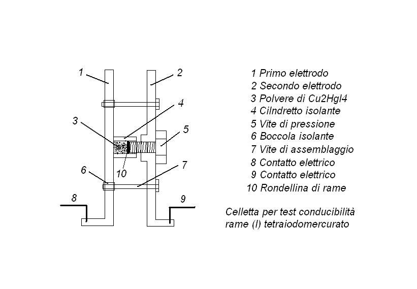
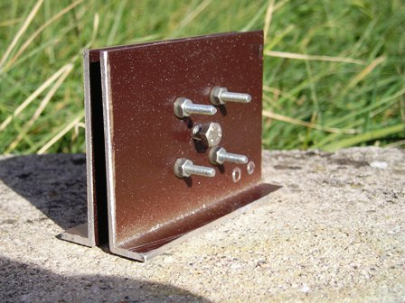
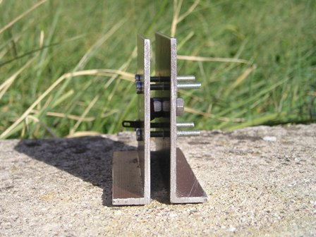
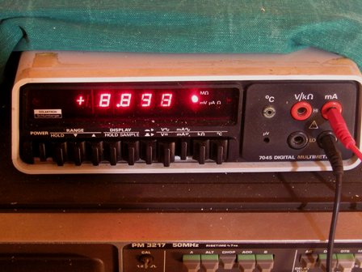
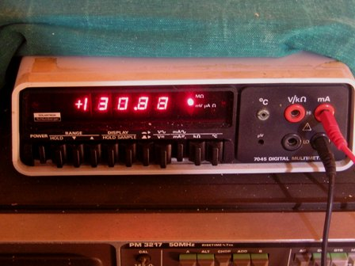

Nella discussione dedicata al termocromatismo del tetraiodomercurato rameoso Cu2HgI4 mi ero riproposto di allestire un setup adeguato alla misura delle variazioni della conducibilità elettrica relativa di questo interessante sale al variare della temperatura.
Naturalmente non è pensabile eseguire tale misura semplicemente immergendo nella polvere i puntali di un tester perchè in tal modo non si misura niente, essendo la resistenza elevatissima.
Nessuna polvere risulta conduttiva in tal modo, nemmeno una metallica; quello che io chiamo effetto "coherer"; provare con della semplice limatura metallica appena prodotta: resistenza quasi infinita!
(Ci saranno dei buoni esperimenti da fare su questo punto...).
Pertanto occorre pensare e assemblare un dispositivo che possa permettere una notevole compressione meccanica della sostanza in esame e contemporaneamente stabilire i relativi contatti elettrici senza incertezze.
Il lavoro è fattibile, anche se non immediato, e presuppone di avere a disposizione almeno una piccola ma adeguata attrezzatura meccanica.

Le immagini e il disegno in sezione spiegano la costruzione di questa celletta dedicata al Cu2HgI4.


Gli elettrodi sono ricavati da due profilati in alluminio a L, serrati assieme da quattro viti di tiraggio, isolate da una parte per mezzo di boccoline in nylon (quelle usate per l'isolamento dei transistor in TO3) in modo che le viti non costituiscano contatto elettrico tra le due piastrine.
La polvere di Cu2HgI4 in esame è contenuta in un corto cilindretto di plastica, a contatto da una parte con una piastra e dall'altra con una rondellina di rame, premuta fortemente da una vite che si appoggia con un controdado sull'altro elettrodo; in questo modo si realizzano i due contatti elettrici e si può comprimere fortemente la sostanza così da renderne la conducibilità misurabile.
(Naturalmente se la sostanza in esame possiede di suo una certa conducibilità, altrimenti si può comprimere fin che si vuole!).
In ogni caso non aspettiamoci in queste condizioni conducibilità "da metalli": essa sarà sempre bassissima, con resistenza dell'ordine dei megaohm o frazioni, ma comunque leggibile.
Il test è stato eseguito alimentando il dispositivo con 12 V e misurando la corrente di passaggio sia a freddo che a caldo, a circa 80°, quindi oltre la temperatura di transizione del sale.
La corrente risente moltissimo, come è ovvio, delle condizioni istantanee di lavoro (pressione meccanica, dilatazioni, ecc.) ma il range di variazioni si assesta su valori abbastanza definiti: come ordine di grandezza circa 10 microA a freddo (1,2 Mohm) e circa 200 microA a caldo (60 Kohm), evdenziando un aumento conducibilità di una ventina di volte.


Mi aspettavo uno scalino di transizione molto più netto intorno ai 70°, mentre ho notato che le variazioni sono macroscopiche ma progressive.
Sottolineo fortemente che tutte queste misure sono RELATIVE, in funzione stretta delle condizioni di lavoro alle quali io ho operato, ma che comunque rendono bene l'idea che mi ero proposto, cioè di evidenziare "le variazioni" e non i valori assoluti, che in questo caso non sono di alcun interesse.
Per curiosità ho testato anche il comportamento in media frequenza (fino a 100 KHz) di questa sostanza, senza alcun risultato significativo in semiconduttività: solo pura resistenza ohmica.
Per la spiegazione del fenomeno rimando a quanto detto nel post precedente, trovando facilmente in rete ragione del fatto che ad un certo punto con l'aumento della temperatura gli ioni rame si mettono a saltellare di qua e di là nel reticolo cristallino in cerca di "buche", e così facendo (ricordo che --> cariche elettriche che si spostano = corrente!) rendono questa sostanza conduttiva con queste caratteristiche.